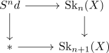

classification techniques for low cell cw complexes
Some ideas:
- for a brutal approach:
- observe that one can lift any pushout diagram

to $\mathrm{An}_{*/}$. hence it suffices to
- calculate $\mathrm{map}_{\mathrm{An}_*}(S^n, \mathrm{Sk}_{n}(X)) = \pi_n(\mathrm{Sk}_{n}(X))$
- then distinguish each cofiber: for that we may use a) show $\vert \pi_(\mathrm{Sk}_n(X)) \vert = n$ and write $n$ many non equivalent CW complexes. b) ask whether the map $S^n \rightarrow \mathrm{Sk}_n(X)$ may be desuspended (especially in the case $\mathrm{Sk}_{n}(X) = S^n = \Sigma S^{n-1}$. c) hopf invariant or F2 hopf invariant similar stuff d) in simple cases: Long exact sequence of homology might help